Observable outcome: each developer can justify a Resource or request adaptable, identify every injection source and optional value, keep repository fallback logic out of HTL, delegate an existing Core Component model and trace an eligible .model.json response.
Topic summary
A Sling Model adapts supported AEM or Sling context into a small Java contract that a view can consume. The adaptable determines which runtime objects are available, while source-specific annotations make properties, children, services, the current adaptable and request bindings explicit. Required and optional inputs should reflect the real component contract: missing essential data must remain visible, while legitimate absence should be represented intentionally.
The model prepares fallbacks, normalized values and explicit state; HTL remains responsible for semantic markup and contextual output. When project behavior modifies a Core Component, delegation preserves the public upstream contract instead of forking a private implementation. Reusable queries or integrations belong in an OSGi service, and an exporter-enabled model can expose its existing contract through .model.json without automatically making every model an endpoint.
- Choose the narrowest adaptable that supplies the required context.
- Name injection sources and make optionality deliberate.
- Prepare fallbacks and derived values once in the model.
- Keep Java data preparation separate from HTL markup.
- Delegate public Core Component behavior instead of copying implementations.
- Inspect exporter eligibility and the actual JSON contract before adding a servlet.
30-minute agenda
| Time | Slide | Facilitation |
|---|
| 0–2 | 1 · Opening | Preview the resource-to-model-to-HTML/JSON path. |
| 2–5 | 2 · View contract | Define the Sling Model’s place between adaptable context and consumers. |
| 5–8 | 3 · Adaptables | Choose Resource or request from the context the model genuinely needs. |
| 8–11 | 4 · Runtime creation | Follow registration, adaptable, resource-type and injection gates. |
| 11–14 | 5 · Injection | Map source-specific annotations and deliberate optionality. |
| 14–17 | 6 · Fallbacks | Move compatibility, normalization and explicit state into the model. |
| 17–20 | 7 · HTL boundary | Separate data preparation from semantic markup. |
| 20–23 | 8 · Delegation | Extend a Core Component through its proxy and public model contract. |
| 23–25 | 9 · Service boundary | Distinguish view preparation from reusable orchestration. |
| 25–27 | 10 · Model Exporter | Trace one eligible .model.json request to serialized output. |
| 27–28 | 11 · Key takeaways | Summarize five implementation decisions. |
| 28–30 | 12 · Questions | Questions from the audience only; no review exercise. |
Complete slide deck
Study each slide with its presenter notes, then copy or download the PNG.
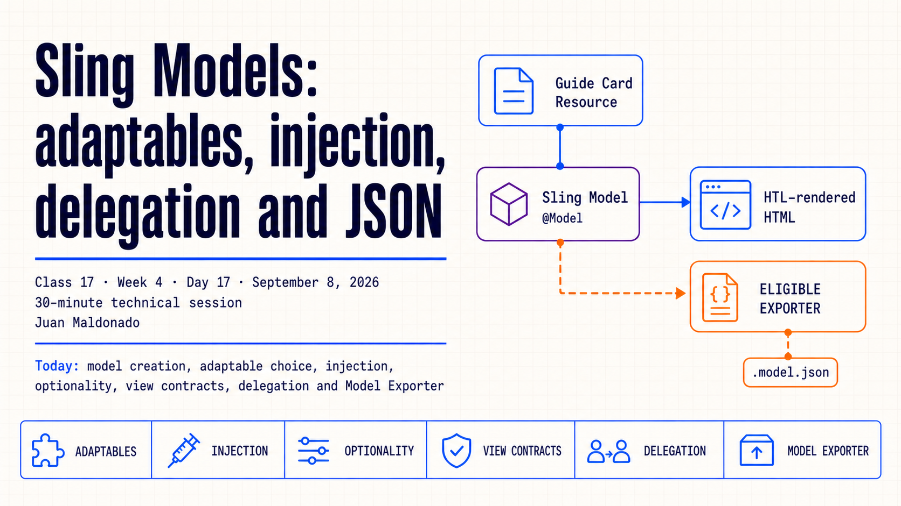
Detailed presenter notes
- Frame: connect the Resource API from Class 16 to the Java objects HTL consumes.
- Path: preview Resource → Sling Model → HTL-rendered HTML.
- Condition: the JSON branch exists only when the model participates in an exporter contract.
- Outcome: explain adaptable, injection, view, delegation and export decisions rather than memorizing annotations.
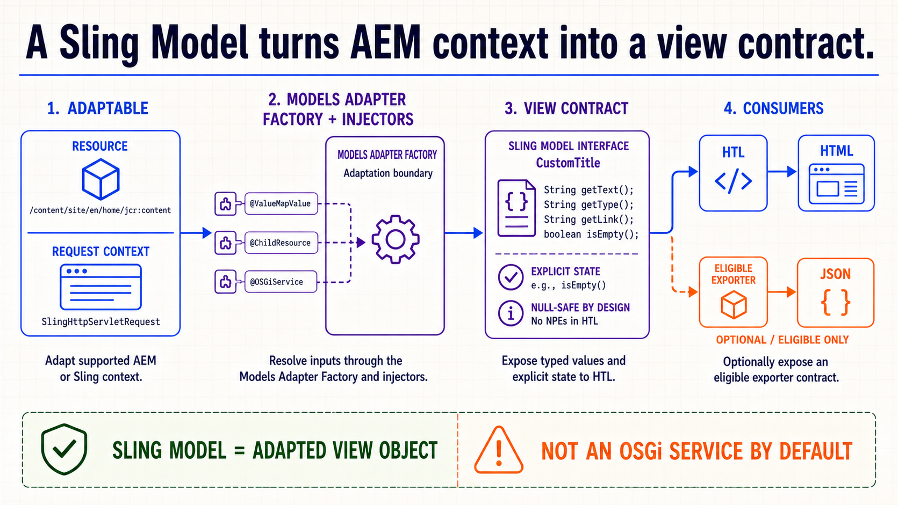
Detailed presenter notes
- Adapt: begin with a supported Resource or request object already available at runtime.
- Create: the Models Adapter Factory finds a compatible model and coordinates registered injectors.
- Contract: expose typed, presentation-ready values and explicit state instead of repository details.
- Consume: HTL uses the contract for HTML; an eligible exporter may serialize it as JSON.
- Distinction: a Sling Model is an adapted view object, not an OSGi service by default.
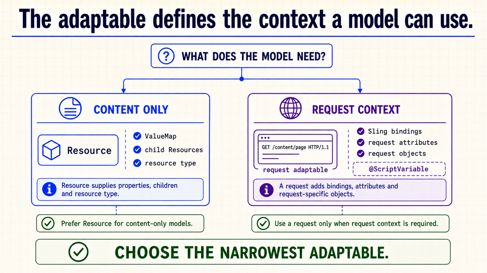
Detailed presenter notes
- Question: choose from the model’s required context, not from habit.
- Resource: properties, children and resource type are sufficient for a content-only model.
- Reuse: a Resource model can be adapted outside an active request.
- Request: use request adaptation for bindings, attributes or request-specific objects.
- Example:
@ScriptVariable depends on Sling bindings and therefore belongs to request context.
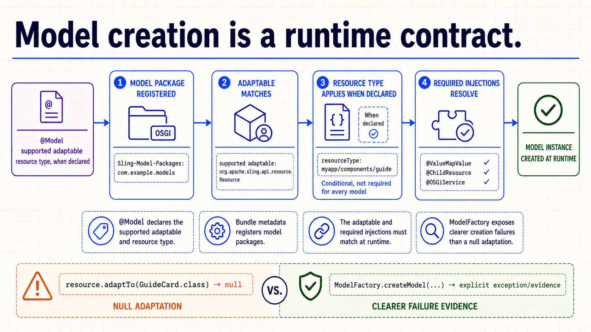
Detailed presenter notes
- Declaration:
@Model names supported adaptables and may associate a component resource type.
- Discovery: bundle metadata must register the model package for the Models Adapter Factory.
- Runtime: the actual adaptable and declared resource type must match.
- Creation: every required injection must resolve before Sling returns a model instance.
- Diagnosis:
adaptTo(...) may return null; ModelFactory can expose a more explicit failure.
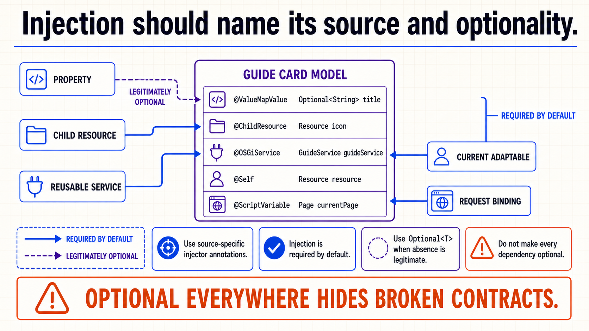
Detailed presenter notes
- Source: prefer
@ValueMapValue, @ChildResource, @OSGiService, @Self and @ScriptVariable over ambiguous generic injection.
- Default: injection is required unless the model or field explicitly declares otherwise.
- Optional: use
Optional<T> when absence is a legitimate state that callers must handle.
- Evidence: a required failure can reveal a wrong property, incompatible adaptable or missing service.
- Avoid: making the entire model optional hides broken contracts and produces partial objects.
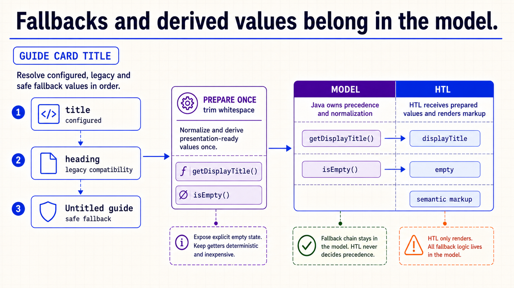
Detailed presenter notes
- Precedence: read current
title, then documented legacy heading, then one safe fallback.
- Compatibility: the legacy path should exist only when real stored content still requires it.
- Preparation: normalize once and expose a stable
getDisplayTitle() value.
- State: expose
isEmpty() when HTL needs a clear render-or-suppress decision.
- Performance: keep getters deterministic and free of hidden repeated queries or integrations.
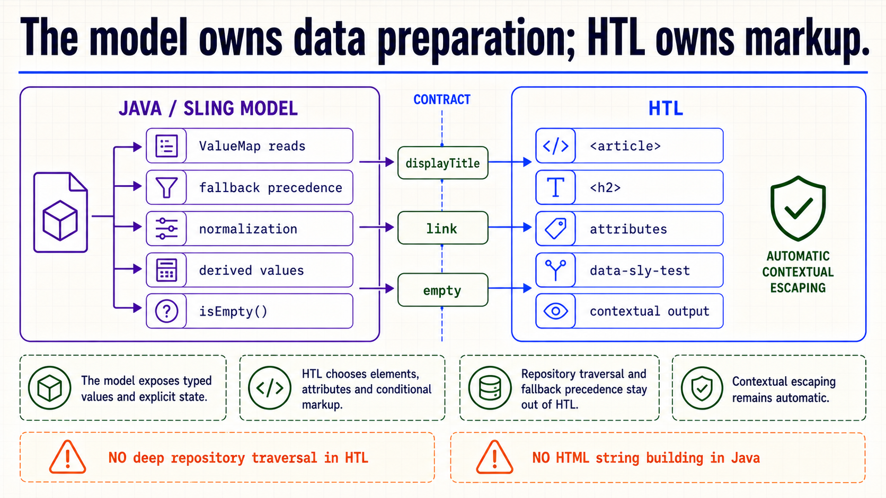
Detailed presenter notes
- Java: own ValueMap reads, fallback precedence, normalization, derived values and explicit state.
- Contract: cross the boundary with only prepared values such as
displayTitle, link and empty.
- HTL: own semantic elements, attributes,
data-sly-test and conditional markup.
- Security: retain contextual escaping; unsafe output is not a shortcut for bad preparation.
- Avoid: do not traverse repository structure in HTL or construct HTML strings in Java.
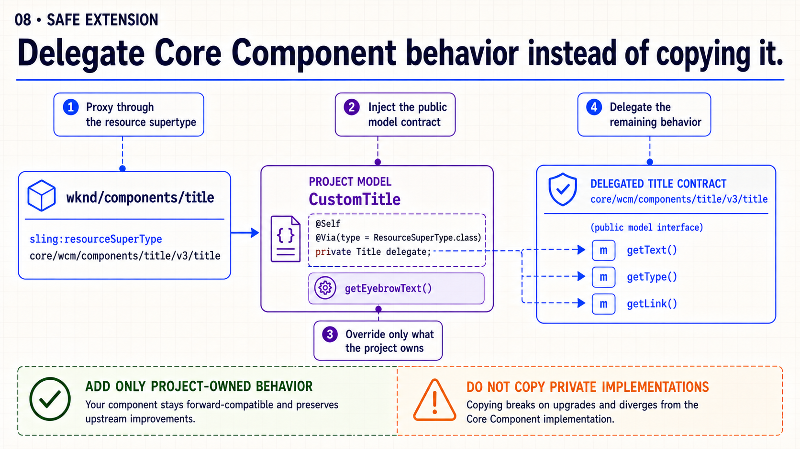
Detailed presenter notes
- Proxy: point the project component’s
sling:resourceSuperType to the versioned Core Component.
- Contract: inject the public
Title model with @Self and @Via(type = ResourceSuperType.class).
- Ownership: add or override only the method required by the project.
- Delegation: pass unchanged public methods through to the inherited model.
- Upgrade path: avoid copying private Core Component implementations that will drift from upstream fixes.
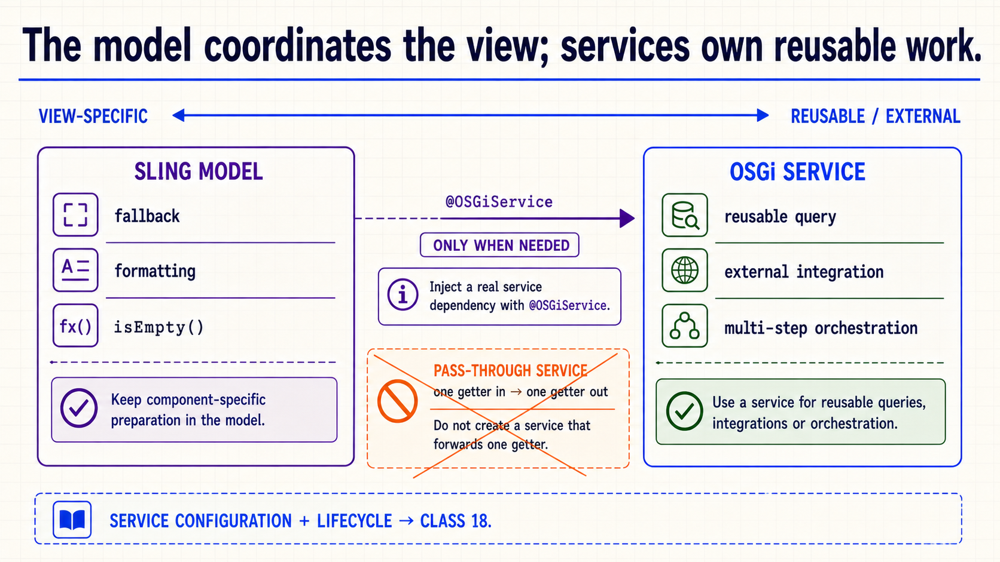
Detailed presenter notes
- Model: keep component-specific fallback, formatting and empty-state decisions at the view boundary.
- Service: extract reusable queries, external integrations or multi-step orchestration.
- Dependency: inject a genuine reusable capability with
@OSGiService.
- YAGNI: a service that forwards one getter creates ceremony without reuse.
- Boundary: service lifecycle and configuration follow in Class 18.
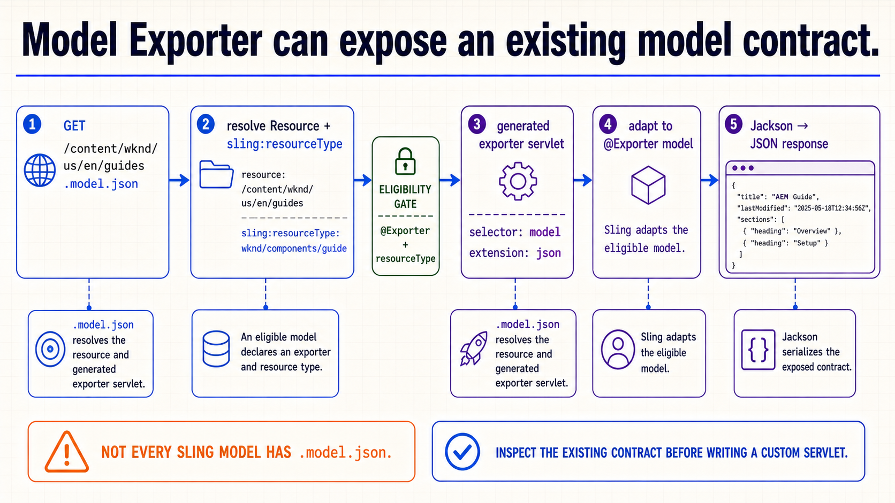
Detailed presenter notes
- Resolve:
.model.json identifies a Resource, selector and extension.
- Eligibility: an applicable model must declare
@Exporter and a matching resource type.
- Adapt: the generated exporter servlet asks Sling for the eligible model.
- Serialize: the exporter, commonly Jackson, converts exposed getters into the JSON response.
- Decision: inspect the actual exporter contract before adding a custom servlet or duplicate DTO.
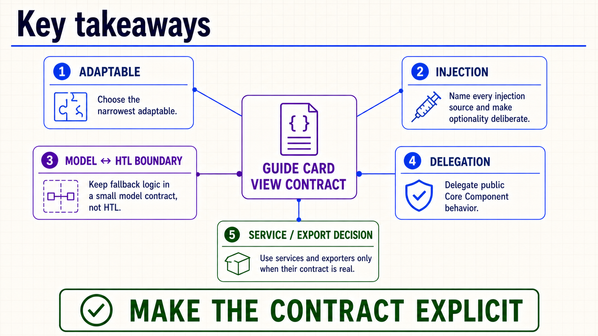
Detailed presenter notes
- Adaptable: choose the narrowest context that provides the required inputs.
- Injection: name each source and preserve meaningful required failures.
- View: prepare fallbacks in the model and keep semantic markup in HTL.
- Extension: delegate public Core Component behavior rather than copying implementations.
- Contracts: introduce services and exporters only when a real reusable surface exists.
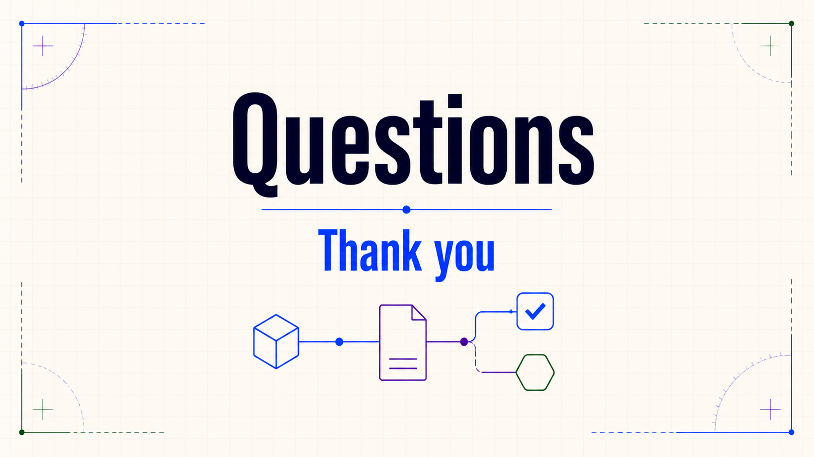
Detailed presenter notes
- Close: thank the audience and leave the floor open for questions they want to raise.
- Boundary: do not introduce scripted prompts, an exercise, an assignment or another backend concept.
Guide Card model practice
- Select Resource or request as the adaptable and write one sentence explaining the required context.
- Inject the current title property and any documented legacy property with source-specific annotations.
- Implement configured → legacy → safe fallback precedence and expose one calculated display value.
- Expose explicit empty state and keep the HTL template limited to semantic markup and conditions.
- If extending an existing Core Component, delegate its public model contract through the resource supertype.
- Inspect the rendered HTML and, only when the model is exporter-enabled, compare its
.model.json representation.
Acceptance: configured, missing and legacy values render without exceptions; the adaptable and every injection source are explainable; fallback logic is absent from HTL; delegated behavior is not copied; and the exported contract is inspected rather than assumed.
Official reading
{kind=link}
{kind=link}
{kind=link}
{kind=link}
{kind=link}
{kind=link}
{kind=link}
{kind=link}
{kind=link}
{kind=link}
{kind=link}
{kind=link}